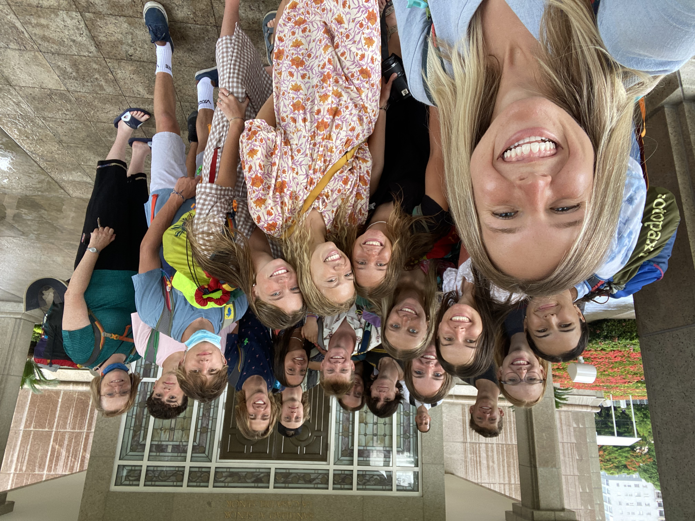

Education
I began my education at Palo Verde High School in Las Vegas. There I graduated with an Advanced Honors Diploma
After graduation, I attended Brigham Young University-Idaho in Rexburg, Idaho. I studied Recreation Management and later graduated with my Associates of Science in 2022 with a 3.51 GPA.
Currently I am enrolled in Brigham Young University in Provo, Utah. I am hoping to study Experience Design and Management.
Experience
- The Church Of Jesus Christ of Latter Day Saints
- Full-time Bilingual Volunteer Representative: Lived in Argentina for a year and a half volunteering in Latin communities. Engaged in leadership, training, logistics, reporting, and shared oversite of 20+ full-time volunteers. - New Student Mentor
- Mentor Coordinator: Planned activities for around 1000 incoming freshman each semester, helped plan and run Get Connected, a weekend long event for incoming freshmen to get to know campus, each other, and their mentors, divided the new students into I-Groups and set them up with 2 mentors, recruited and contracted mentors throughout the semester and met weekly with the mentors assigned to me to go over goals, their new students, and suggestions for the program
- Humanitarian Experience
- Trip Leader and Builder Experience Intern: Co-Lead groups of 16-19 yeay olds on a two week long sevice mission in Puerto Rico and the Dominican Republic. I also oversaw and created social media posts for the Instagram's of 37 trip locations as an intern.
 With my secong group at the Dominican Republic Temple.- Language – Written and Spoken Spanish Fluency
- Technical Skills –Excel, PowerPoint, Tableau, SQL, Social Media (Facebook, Instagram, Twitter)
- Leadership – Senior Class President. Organized and executed all activities for seniors, including but not limited to senior week, the senior assembly, prom, and graduation at Palo Verde High School in Las Vegas
- Volunteer – Participant in Humanitarian Service in Mexico, Samoa, and Guatemala (2017, 2018, 2013)
Personal